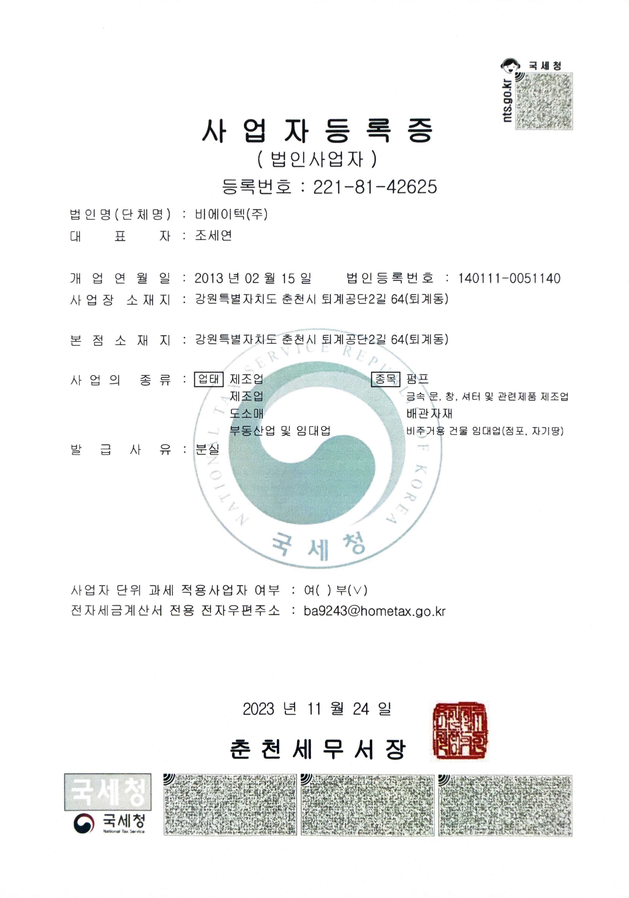
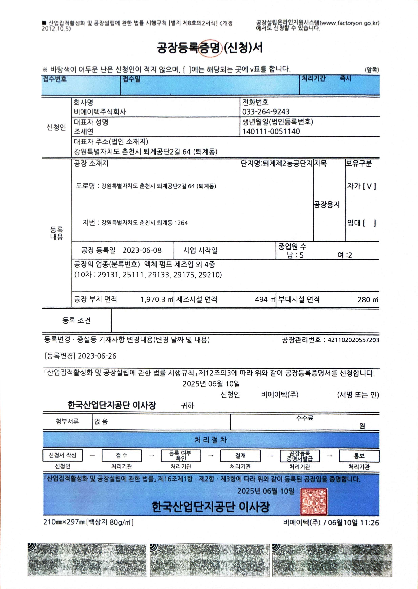
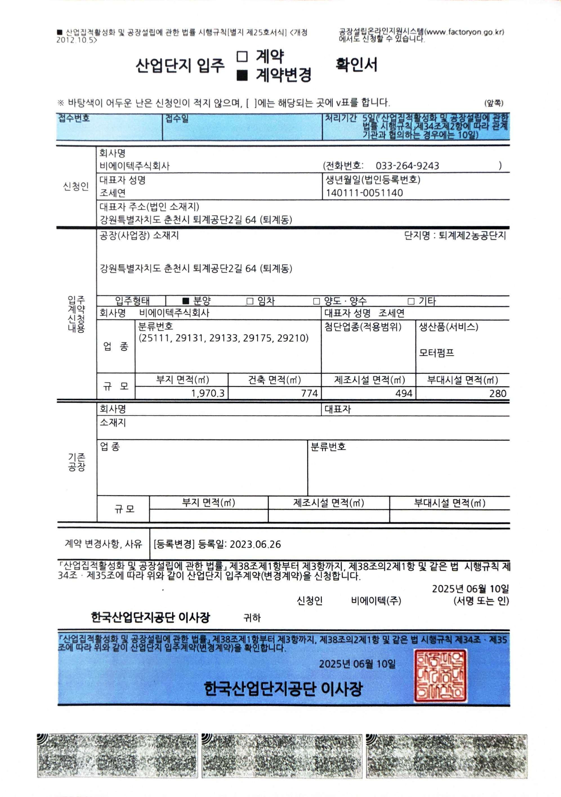
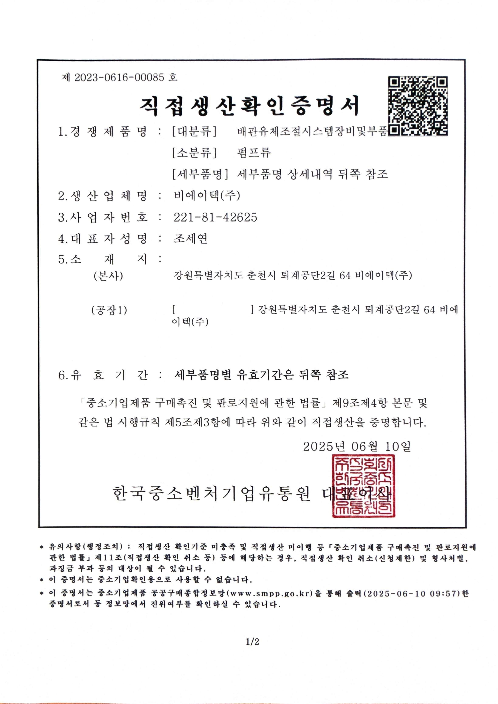
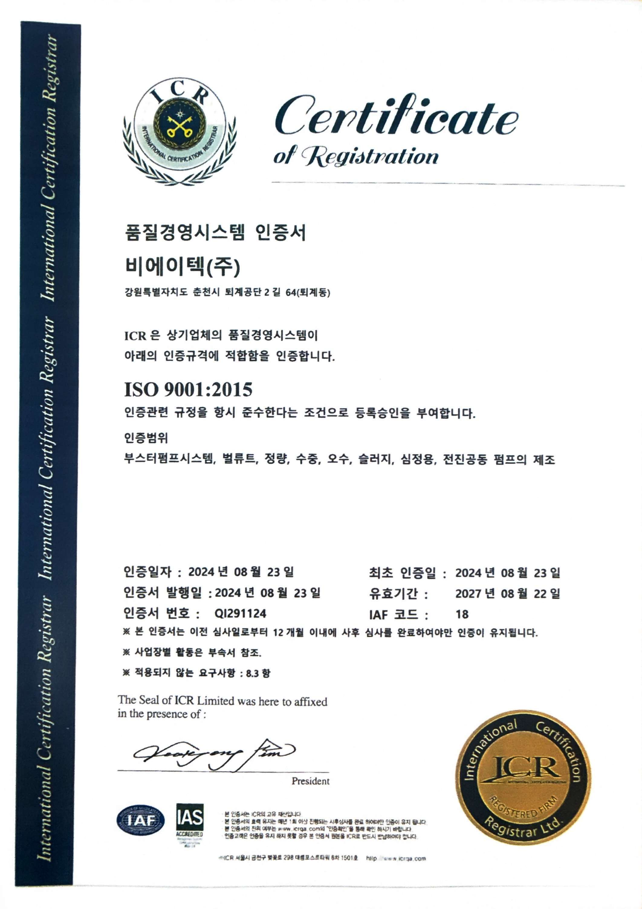
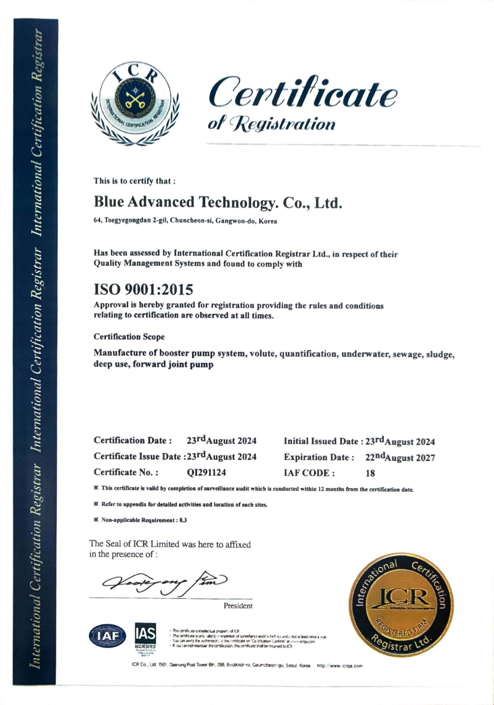
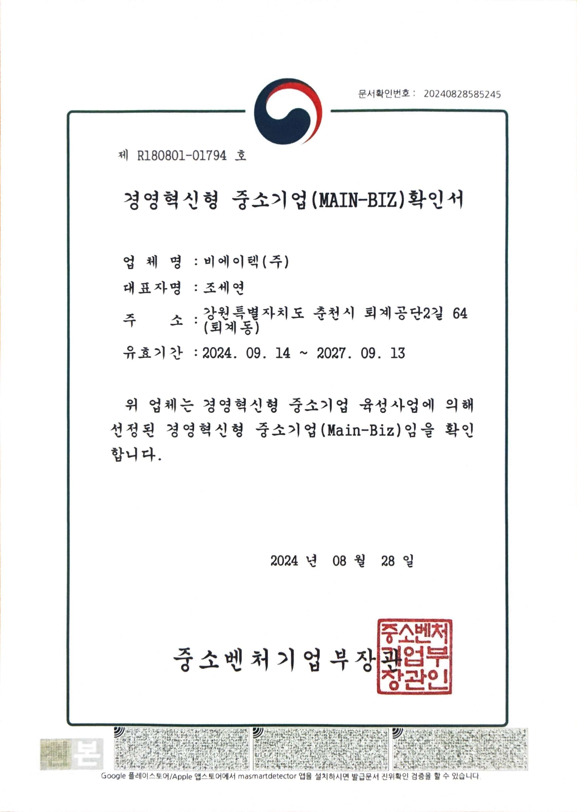
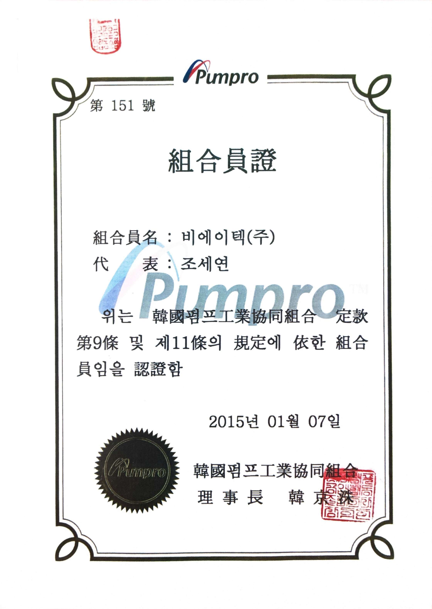
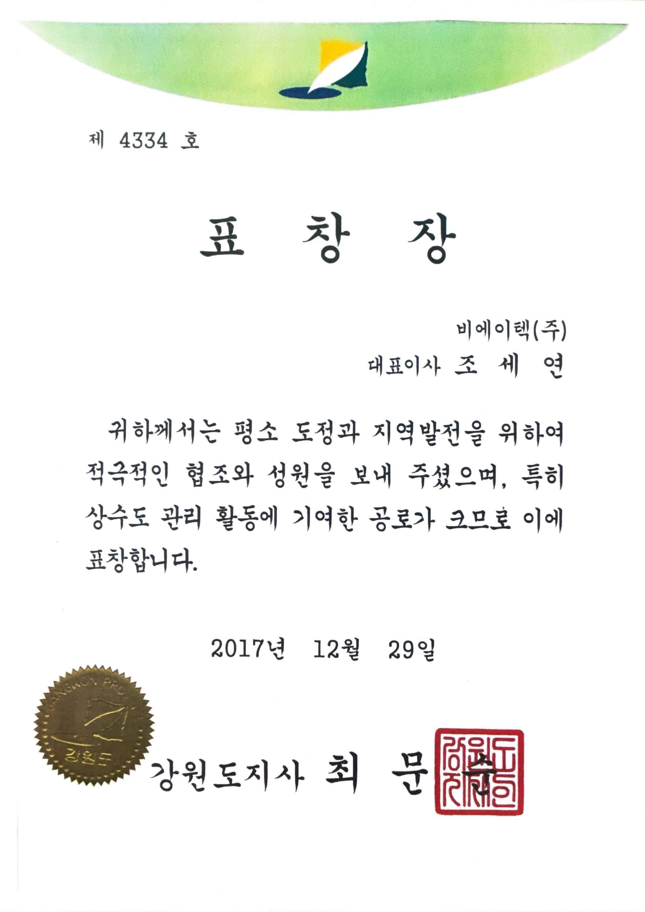

원본 지명원 스캔 이미지
(주)비에이텍의 우수한 무맥동 정량펌프 기술력과 끊임없는 현장 납품 성과를 공식 지명원을 통해 확인하십시오.
비에이텍은 공공 하수처리장, 상수도 시설, 관공서 및 화학공정 연구 단지에 정밀 펌프 제어 시스템을 성실히 구축해 왔습니다. 지명원의 공식 사업 실적 데이터와 10종 국가 공인 인증 현황을 디지털 레이아웃으로 한눈에 확인하십시오.
| 번호 | 발주처 | 납품일자 | 주요 사업 및 공사명 | 제품 구분 | 비고 |
|---|---|---|---|---|---|
| 404 | 홍천군 | 2019.06 | 농업용수(양덕원리 취수펌프) 배수관로 설치공사 | 진공펌프 | 비에이텍 주식회사 |
| 405 | 춘천시 상하수도사업본부 | 2019.08 | 2019년 상수도시설 확충공사 (서면당림리 272번지일원외) | 부스터펌프 | 비에이텍 주식회사 |
| 406 | 춘천시 상하수도사업본부 | 2019.06 | 용산정수장 송수펌프 | 송수펌프 | 비에이텍 주식회사 |
| 407 | 철원군 상하수도사업소 | 2019.05 | 김화하수처리구역(와수3처리분구) 하수관거정비사업 | 수중볼텍스펌프 | 비에이텍 주식회사 |
| 408 | 춘천시 상하수도사업본부 | 2019.06 | 근화동 유수지 배수펌프 증설공사 | 수중펌프 | 비에이텍 주식회사 |
| 409 | 강원도 인재개발원 | 2019.06 | 본관기계실 노후펌프 교체공사 | 수중펌프 | 비에이텍 주식회사 |
| 410 | 춘천시 상하수도사업본부 | 2019.06 | 솔무치지구 밭기반 정비사업 1차분 | 심정펌프 | 비에이텍 주식회사 |
| 411 | 홍천군 | 2019.06 | 홍천군 관내 가압장 펌프 납품 | 부스터펌프 | 비에이텍 주식회사 |
| 412 | 삼척시 상수도사업소 | 2019.08 | 미로상수도 확장공사 | 부스터펌프 | 비에이텍 주식회사 |
| 413 | 양양군 상하수도사업소 | 2019.06 | 강현가압장 가압시설 증설공사 | 부스터펌프 | 비에이텍 주식회사 |
| 414 | 양구군 상하수도사업소 | 2019.07 | 송현 공공하수처리시설 설치공사 | 펌프류 | 비에이텍 주식회사 |
| 415 | 양구군 상하수도사업소 | 2019.07 | 구암 공공하수처리시설 관급자재 - 펌프류 | 펌프류 | 비에이텍 주식회사 |
| 416 | 양구군 상하수도사업소 | 2019.07 | 죽곡 공공하수처리시설 관급자재 - 펌프류 | 펌프류 | 비에이텍 주식회사 |
| 417 | 삼척시 하수도사업소 | 2019.06 | 삼사빗물펌프장 펌프 수리 수선 | 펌프 수리 | 비에이텍 주식회사 |
| 418 | 철원군 농업기술센터 | 2019.07 | 2019년 만경보 수중펌프 | 수중펌프 | 비에이텍 주식회사 |
| 419 | 철원군 농업기술센터 | 2019.07 | 2019년 철원 대마지구(대마리 990번지) 수리시설 정비사업 | 수중펌프 | 비에이텍 주식회사 |

| 등록번호 | 221-81-42625 |
|---|---|
| 법인명 | 비에이텍(주) |
| 대표자 | 조세연 |
| 개업일자 | 2013년 02월 15일 |
| 주요업종 | 제조업 (액체 펌프 제조업 외) |
| 사업장 | 춘천시 퇴계공단2길 64 |

| 회사명 | 비에이텍주식회사 |
|---|---|
| 등록일자 | 2023년 06월 08일 |
| 공장소재지 | 춘천시 퇴계공단2길 64 (퇴계동) |
| 분류번호 | 29131 (액체 펌프 제조업 외) |
| 용지면적 | 1,970.3 ㎡ (자가 소유) |
| 제조시설 | 제조 494 ㎡ / 부대 280 ㎡ |

| 기업명 | 비에이텍주식회사 |
|---|---|
| 단지구분 | 퇴계제2농공단지 입주 |
| 등록구분 | 입주계약 등록 (2023.06.26) |
| 주요생산품 | 모터펌프 |
| 건축면적 | 774 ㎡ |
| 주관기관 | 한국산업단지공단 이사장 |

| 발급번호 | 제 2023-0616-00085 호 |
|---|---|
| 경쟁제품군 | 배관유체조절시스템 / 펌프류 |
| 주요품목 | 다단/단단/양흡입/편흡입 볼류트펌프, 정량펌프, 수중펌프, 오수/슬러지펌프, 심정펌프, 전진공동펌프, 부스터펌프 |
| 필수조건 | 토출구경 200mm ~ 600mm 미만 직접생산 |
| 발급기관 | 한국중소벤처기업유통원 |

| 인증규격 | ISO 9001:2015 / KS Q ISO 9001:2015 |
|---|---|
| 인증번호 | Q1291124 |
| 인증범위 | 부스터펌프시스템, 볼류트, 정량, 수중, 오수, 슬러지, 심정용, 전진공동 펌프 제조 |
| 최초인증 | 2024년 08월 23일 |
| 유효기간 | 2024.08.23 ~ 2027.08.22 |
| 인증기관 | ICR (International Certification Registrar) |

| Standard | ISO 9001:2015 Quality Management |
|---|---|
| Company | Blue Advanced Technology Co., Ltd. |
| Scope | Manufacture of booster pump system, volute, quantification, underwater, sewage, sludge, deep use, forward joint pump. |
| No. | Q1291124 |
| Validity | 23rd August 2024 ~ 22nd August 2027 |
| Registrar | International Certification Registrar Ltd. |

| 확인번호 | 제 R180801-01794 호 |
|---|---|
| 인증구분 | 경영혁신형 중소기업 (Main-Biz) |
| 기업명 | 비에이텍(주) |
| 대표자 | 조세연 |
| 유효기간 | 2024.09.14 ~ 2027.09.13 |
| 발급처 | 중소벤처기업부 장관 |

| 조합원명 | 비에이텍(주) |
|---|---|
| 조합원번호 | 제 151 호 |
| 가입일자 | 2015년 01월 07일 |
| 조합명 | 한국펌프공업협동조합 |
| 대표자 | 조세연 |
| 근거조항 | 조합 정관 제9조 및 제11조 규정 공인 |

| 표창번호 | 제 111-4334 호 |
|---|---|
| 기업명 | 비에이텍(주) |
| 수상자 | 대표이사 조세연 귀하 |
| 수여일자 | 2017년 12월 29일 |
| 수여목적 | 지역발전 헌신 및 상수도 관리 활동 기여 |
| 수여자 | 강원도지사 최문순 |